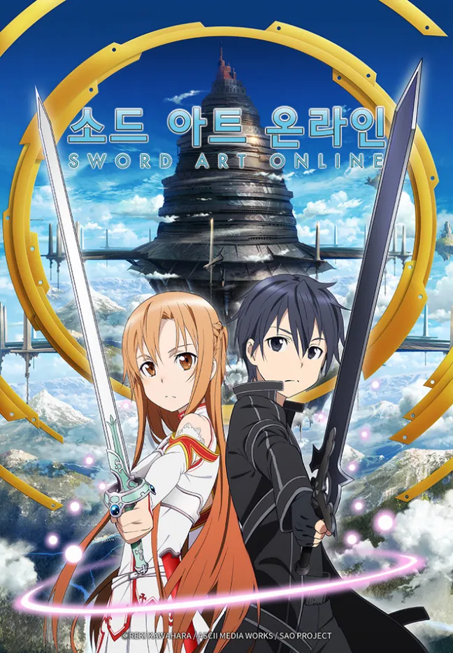

등급 : 15세 관람가
평점 :
편성 : 23부작
TV 만화
2022년. 인류는 마침내 완전한 가상 공간을 실현했다. 모든 게이머가 꿈꿔왔던 VRMMORPG(가상 대규모 온라인 롤 플레잉 게임) “소드 아트 온라인”이 정식 가동을 시작한다. 주인공인 소드 아트 온라인 플레이어인 키리토. 그는 SAO의 세계에서 플레이를 만끽하던 중 다른 1만명의 플레이어와 함꼐 게임 마스터의 무자비한 선고를 듣는다. 100층까지 있다는 부유성 아인크라드의 정상을 정복해 게임을 클리어 하지 못하면 로그아웃을 할 수 없다고... 그리고 게임 오버는 현실 세계에서 “죽음”을 의미한다고... 키리토는 재빨리 게임의 ‘진실’을 받아들이고 파티를 짜지 않는 솔로 플레이어로 끝이 보이지 않는 사투에 몸을 던진다. OTT넷플릭스
티빙
왓챠
아직 제공되지 않습니다